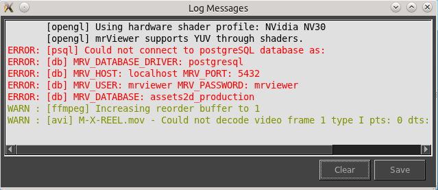

The Log Window displays information about the functioning of mrViewer. In the log window you can see warnings, errors and other information that occurs while working.
In the example, the database function of mrViewer is not functioning, and the movie file skipped one frame which it could not decode.